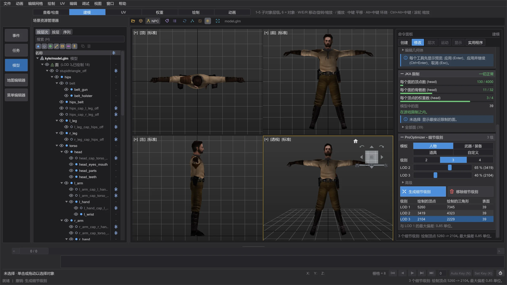
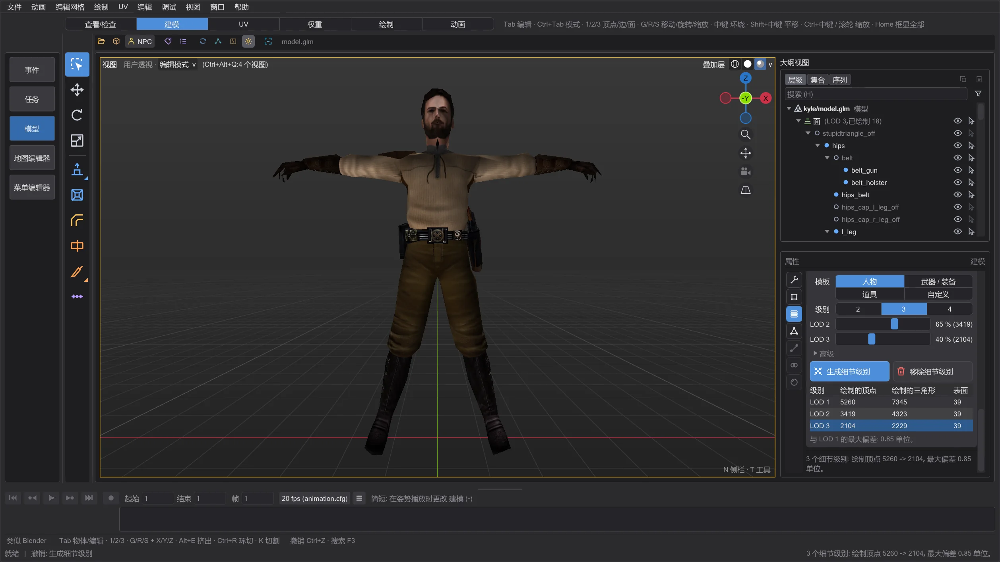
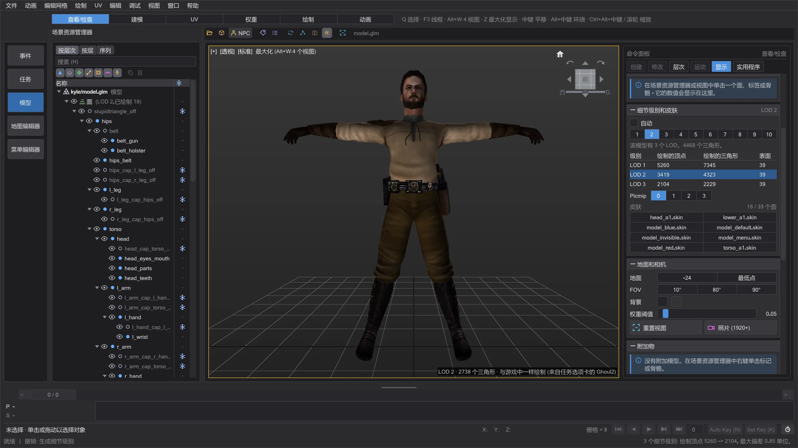
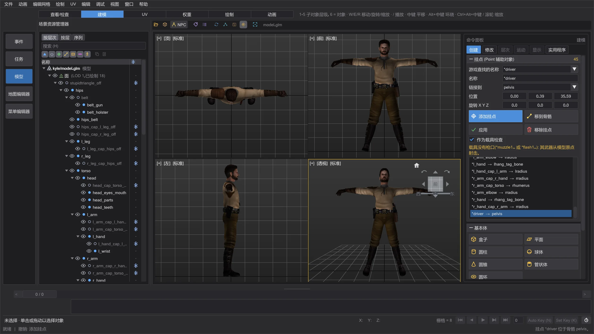
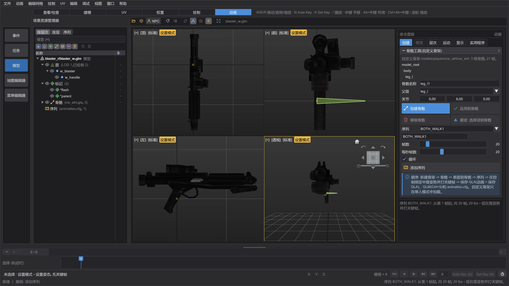

Model 选项卡: 细节级别、挂点、自定义骨架
像 ProOptimizer 或 Decimate 一样生成 LOD 2 和 3, 查看每级顶点数, 为座位和枪口添加挂点, 为载具建立骨架。
生成细节级别#
游戏用较粗的细节级别绘制远处的模型。在 建模 区域, 组 ProOptimizer - 细节级别(3ds Max 方式, 修改 选项卡)或 Decimate - 细节级别(Blender 方式, 修改器选项卡)从 LOD 1 生成它们。模板 选择每级保留多少 - 按 Jedi Academy 的文件测得: 人物 0.65 / 0.40, 武器和装备 0.55 / 0.30, 道具 0.75 / 0.50。级别 为 2、3 或 4(.md3 最多 3), 滑块设置每级比例并显示目标顶点数。生成细节级别 是一步撤销; 之后视图显示最低级别, 表格列出每一级前后的数字 - 点击一行即可查看。

较粗级别的每个顶点都是 LOD 1 的顶点: 位置、法线、UV、骨骼和权重与文件中完全相同 - 因此 .md3 保留所有帧, .glm 每个顶点最多四个权重且总和为 1。表面一起简化: 两个表面相接处, 一条边在两侧同时折叠, 边界保持闭合。UV 接缝保留。标签(*name)、以 _off 结尾和含 _cap_ 的表面在每一级都保持原样 - 端盖仍能封住切口。每个表面都低于目标游戏的 SHADER_MAX_VERTEXES, .glm 的最低级别低于其一半(大表面的模板阴影使用该级别)。.glm 把各级别存在文件中; 保存 .md3 时在旁边写出 name_1.md3 和 name_2.md3 - 若这些文件已存在, 程序会在覆盖前询问。不点“生成”就什么都不变, 保存写出的字节与以前相同, 也不动 name_1/name_2。

每级顶点数#
在 查看/检查 区域, 组 细节级别和皮肤 列出每一级的顶点、三角形和表面数; 一行的提示给出最大的表面以及它超过的每项限制(红色: 超过 SHADER_MAX_VERTEXES, 黄色: 最低级别的阴影限制、MD3_MAX_VERTS 4096、MD3_MAX_SURFACES 64)。对于游戏的 .md3, 旁边的 name_1.md3 和 name_2.md3 也会计入。没有级别时, 按钮 生成细节级别 打开上面的组。使用 Clone Wars 配置时, 地图编辑器的优化器还会报告顶点数超过一个表面承载量但没有 _1.md3 的运行时 .md3, 以及有 _2.md3 却没有 _1.md3 的情况(游戏会在那里终止)。

座位和枪口的挂点#
建模 区域中的组 挂点 (Point 辅助对象)(3ds Max 方式)或 挂点 (骨骼上的空物体)(Blender 方式)在 .glm 中添加挂点表面: 名称取自游戏代码查询的名称列表(载具 *driver、*droidunit、*muzzle1..、*exhaust1..; 固定炮 *seat、*flash01; 武器 *flash; 人物的标签 - 提示给出 OpenJK 或 Movie Duels 中的文件和行号)或自定义, 以及它跟随的骨骼、位置和旋转。添加挂点 是一步撤销; 点击列表中的挂点会填入字段, 应用 应用它们。挂点保存为带一个三角形的表面, 游戏正好把它读作这个位置和旋转。

勾选 作为载具检查 时 - 或使用检查配置 Clone Wars 流程时始终 - 如果缺少 *driver(驾驶员坐在模型原点)或缺少所有枪口(*muzzle1.. 或 *flash1..: 武器从原点射击), 该组会发出警告。
载具的自定义骨架#
AT-RT 或 AT-TE 这样的步行机以及机器人需要自定义骨架 - 人物保持在 _humanoid.gla 上, 游戏共用它的骨骼和动画。在 动画 区域, 组 骨骼工具(自定义骨架)(3ds Max 方式, 如骨骼工具)或 骨架(自定义骨架)(Blender 方式, 如编辑模式下的骨架)无需其他程序即可走完全程:
- 新建骨架 加文件夹名会创建带骨骼 model_root 的 models/players/<名称>/<名称>, 并把每个表面挂到它上面。
- 创建骨骼 添加带名称、父级和关节的骨骼; 点击列表中的骨骼可选中它以移动、重命名或移除。
- 蒙皮: 选择项到骨骼 把所选表面刚性地挂到所选骨骼上 - 载具部件就是这样运动的。更细的权重像任何人物一样在 Weights 区域绘制。
- 添加序列 向骨架添加帧, 并向 animation.cfg 添加一行 ANIM_NAME 起始帧 帧数 循环帧 每秒帧数; 像任何动画一样用控制绑定摆姿势并打关键帧, 然后保存 .gla、.glm 和 animation.cfg。
